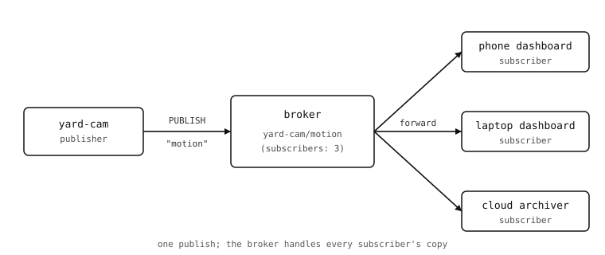

9.18. MQTT, bájtról bájtra¶
Ezen a ponton a kamera minden szükséges elemmel rendelkezik ahhoz, hogy egy valódi szolgáltatással kommunikáljon a nyílt interneten: van TCP-socketje, TLS, amely becsomagolja, DNS, amely nevet ad a peernek, és asyncio, amely lehetővé teszi, hogy ugyanaz a szkript más munkát is végezzen, amíg a kapcsolat nyitva van. Az MQTT az első olyan vezetékes protokoll, amely mindezeket összefogja valamivé, amit egy üzembe helyezett termék ténylegesen használ.
Ez az oldal magát a protokollt mutatja be – a vezetékes formátumot, az egyes résztvevők által betöltött szerepeket és a tervezésében rejlő kompromisszumokat – elég őszintén ahhoz, hogy a mellékelt mqtt kliens a már ismert dolgok nyilvánvaló becsomagolásának tűnjön, ne pedig vakmerő ugrásnak.
9.18.1. Pub/sub kontra kérés/válasz¶
A HTTP – amelyhez a legtöbb kameraprojekt először nyúl – kérés/válasz alapú. A kliens egy adott szervertől egy adott erőforrást kér; a szerver válaszol. Minden csere egy-az-egyhez jellegű, és mindkét fél előre ismeri a másik címét.
Az MQTT közzététel/feliratkozás (publish/subscribe) alapú. A kliensek egy középen elhelyezkedő harmadik félhez, az úgynevezett brókerhez csatlakoznak. Egy közzétevő (publisher) egy megnevezett topicra küld üzenetet anélkül, hogy tudná vagy törődne azzal, ki hallgatja. Egy feliratkozó (subscriber) megmondja a brókernek, mely topicokra kíváncsi, és ezután minden olyan üzenetet megkap, amelyet ezekre a topicokra közzétesznek. A bróker végzi a szétosztást: egyetlen közzététel a yard-cam/motion topicon eljut minden olyan eszközhöz, amely feliratkozott a yard-cam/motion topicra, akár nulla, akár egy, akár ötven ilyen van.
Három dolog következik ebből a modellváltásból:
Szétcsatolás. A közzétevőknek nem kell tudniuk, hogy léteznek feliratkozók. A feliratkozók jöhetnek és mehetnek anélkül, hogy a közzétevő észrevenné. Egy második műszerfal hozzáadása egyetlen kódsor az új műszerfalon; a kamera nem változik.
Szétosztás. A bróker kezeli az összes másolatot, így a kamera egyetlen csomagot küld, függetlenül attól, hány eszköz olvassa. Pontosan erre a felhasználási esetre épült az MQTT.
Aszimmetria. A bróker mostantól szükséges infrastruktúra-elem – nélküle a protokoll nem működik. Otthoni projektekhez ez általában egy ingyenes nyilvános bróker (
test.mosquitto.org,broker.hivemq.com), vagy egy kisebb, amelyet magad üzemeltetsz.

9.18.2. Topicok¶
A topicok perjellel elválasztott karakterláncok. A konvenció szerint a legáltalánosabb áll balra, a legspecifikusabb pedig jobbra:
yard-cam/motion
yard-cam/temperature
workshop-cam/motion
workshop-cam/temperature/sensor-3
Két helyettesítő karakter működik a feliratkozásokban (a közzétételekben nem):
A
+egyetlen szintre illeszkedik. A+/motionminden kamera motion topicjára feliratkozik; ayard-cam/+pedig minden yard-cam altopicra.A
#egy vagy több záró szintre illeszkedik. Ayard-cam/#feliratkozik ayard-cam/motion,yard-cam/temperature,yard-cam/temperature/sensor-3topicokra, és minden másra ayard-cam/alatt. A feliratkozás végén kell szerepelnie.
A topic karakterláncok megkülönböztetik a kis- és nagybetűket. A specifikáció szerint a kezdő $ a bróker belső topicjait jelöli ($SYS/...), amelyekre a közzétevőknek nem szabad írniuk.
9.18.3. A csomagformátum¶
Az MQTT TCP felett fut. Minden vezérlőcsomag egy egybájtos fix fejléccel kezdődik, amelyet egy változó hosszúságú Remaining Length mező követ, majd egy csomagtípus-specifikus változó fejléc, végül a hasznos teher (payload). Ugyanaz a külső formátum vonatkozik minden parancsra – CONNECT, PUBLISH, SUBSCRIBE, PUBACK, DISCONNECT és a többi – ezért is írható meg egy MQTT-kliens néhány száz sorban.

A fix fejléc egyetlen bájt:
A 7..4 bitek a vezérlőcsomag típusa. A
0x3a PUBLISH (így az első bájt általában0x3?formában kezdődik). A0x1a CONNECT,0x2a CONNACK,0x8a SUBSCRIBE,0xCa PINGREQ,0xEa DISCONNECT és így tovább.A 3..0 bitek csomagtípus-specifikus jelzők. A PUBLISH esetében a jelzők a DUP újraküldési jelzőt, a QoS-szintet (2 bit) és a RETAIN jelzőt kódolják.
A Remaining Length egy 1-4 bájtos változó hosszúságú egész szám, amely a saját maga utáni minden bájtot megszámol. Minden bájt felső bitje folytatásjelző – az 1 azt jelenti, hogy „még egy hosszúságbájt következik”, a 0 pedig azt, hogy „ez az utolsó”. A 128 alatti hossz elfér egy bájtban; a nagyobb hasznos terhek többet használnak. A maximális kódolt hossz 256 MiB.
Egy PUBLISH esetében a változó fejléc a topic neve – egy 2 bájtos hossz, majd UTF-8 bájtok –, amelyet egy 2 bájtos csomagazonosító követ, amely csak akkor létezik, ha a QoS 1 vagy 2. A fennmaradó bájtok a hasznos teher, amelyet a protokoll átlátszatlan bájtokként kezel.
Egy minimális, QoS-0 szintű PUBLISH, amely az ok üzenetet küldi az a/b topicra, így néz ki:
30 07 00 03 'a' '/' 'b' 'o' 'k'
30– PUBLISH, minden jelző nulla.07– 7 bájt következik.00 03– a topic hossza 3.'a' '/' 'b'– a topic.'o' 'k'– a hasznos teher.
Kilenc bájt a vezetéken, és az üzenet eljut a brókeren az a/b topicra feliratkozó összes előfizetőhöz.
9.18.4. QoS-szintek¶
A szolgáltatásminőség (Quality-of-Service) szabályozza, mennyire erőfeszítéssel biztosítja a bróker (és a kliens) a kézbesítést. A három szint:
QoS 0 – legfeljebb egyszer. Küldd el és felejtsd el. A PUBLISH csomag elküldésre kerül, de soha nem nyer megerősítést. Ha a TCP kézbesíti, a bróker továbbítja. Ha a kapcsolat küldés közben megszakad, az üzenet elveszik. A legtöbb érzékelő-telemetriához megfelelő a QoS 0 – egyetlen kimaradó hőmérséklet-leolvasás egy 30 másodpercenként kibocsátó adatfolyamban nem számít.
QoS 1 – legalább egyszer. A közzétevő csomagazonosítót mellékel, és egy PUBACK-ra vár. Ha az időtúllépés előtt nem érkezik PUBACK, a közzétevő beállított DUP jelzővel újraküldi. A bróker végül kézbesítheti ugyanazt az üzenetet kétszer is egy feliratkozónak ugyanazon a szinten; a feliratkozónak fel kell készülnie a másolatok kezelésére.
QoS 2 – pontosan egyszer. Egy négylépéses kézfogás (PUBREC / PUBREL / PUBCOMP) biztosítja, hogy az üzenet pontosan egyszer érkezzen meg, még az újracsatlakozásokon át is. Költséges a körutak és a bróker állapotának szempontjából. Kevés kameraalkalmazásnak van szüksége rá.
A mellékelt mqtt kliens a QoS 0 és a QoS 1 szintet valósítja meg; a QoS 2 kivételt dob, ha kéred. Egy érzékelő-leolvasásokat jelentő kamera számára a QoS 0 szinte mindig a helyes válasz.
9.18.5. Megőrzött üzenetek és végrendelet¶
Két funkciót érdemes ismerni, mert megváltoztatják azt, amit a bróker megjegyez a topicodról.
RETAIN. Ha egy PUBLISH csomagon be van állítva a RETAIN jelző, a bróker eltárolja az üzenetet, és minden jövőbeli feliratkozónak továbbítja abban a pillanatban, amikor feliratkozik. Így kezeli az MQTT a „mi a jelenlegi érték?” kérdést – egy érzékelő megőrzött módon teszi közzé a legutóbbi leolvasását, és egy műszerfal, amely tíz perccel később iratkozik fel, így is megkapja a legfrissebb értéket ahelyett, hogy a következő közzétételre várna. Az ugyanazzal a topiccal történő újra-közzététel felülírja a megőrzött értéket; egy üres hasznos teher közzététele törli azt.
Végrendelet (last will). Amikor egy kliens csatlakozik, megadhat a brókernek egy „utolsó akaratot és végrendeletet”: egy topicot, egy hasznos terhet, egy QoS-t és egy retain jelzőt. Ha az a kliens nem szabályosan bontja a kapcsolatot – TCP RESET, áramkimaradás, hálózati megszakadás DISCONNECT csomag nélkül –, a bróker a kliens nevében közzéteszi a végrendeletet. A feliratkozók ezt a kamera offline állapotba kerüléséről szóló értesítésként látják. Maga a kamera soha nem küldi el a végrendeletet; a bróker teszi, mert addigra a kamera már nincs jelen.
9.18.6. Életben tartás és újracsatlakozás¶
A CONNECT egy életben tartási (keepalive) intervallumot hordoz másodpercben. Ha a kliens ennyi ideig néma volt, a bróker halottnak tekinti. Ennek megelőzésére a kliens időről időre küld egy PINGREQ-et (egyetlen bájt: 0xC0), és visszakap egy PINGRESP-et (0xD0) – a legkisebb, legolcsóbb szívverést, amelyet a protokoll hordozni tud. A legtöbb kameraalkalmazás 30 vagy 60 másodpercre állítja az életben tartást.
Ha a TCP-kapcsolat megszakad, mindkét fél észreveszi, és nulláról csatlakozik újra. A megszakadás előtt létesített feliratkozások elvesznek, hacsak a kliens nem használt tartós munkamenetet a csatlakozáskor; egyszerű kameraalkalmazásokhoz az újracsatlakozáskor-újrafeliratkozás minta rövidebb és ugyanolyan jó.
Ez elegendő az MQTT-specifikáció olvasásához, vagy egy kliens kézi megírásához egy socket.socket felett. A mqtt modulban lévő mellékelt kliens pontosan ezt teszi, plusz egy értelmes API-t biztosít az alkalmazáskódhoz.